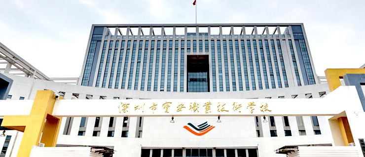
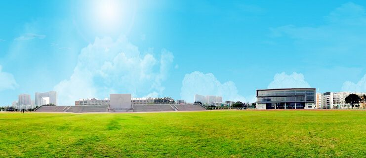
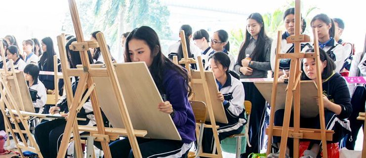

- 首页 学校概况 学校简介
深圳市宝安职业技术学校简介
作者 2015-08-24 阅读 2066
深圳市宝安职业技术学校是宝安区人民政府于1985年创办（期间整合宝安中等专业学校、宝安职业高级中学、宝安成人中等专业学校），属公办全日制中等职业学校。现分设东、西两个校区，东校区位于宝城18区，西校区位于宝安教育城。2011年在西校区扩建新校。2009年成为“国家级重点中等职业技术学校”，2014年成为首批“国家中等职业教育改革发展示范学校”。
秉持“以人为本，协调发展”办学理念，注重人文教育。实行校部二级管理，设行政部和财经、机电、信息、商贸、艺术等5个专业部。开设有会计、物流服务与管理、物业管理、计算机网络技术、软件与信息服务、汽车运用与维修、数控技术应用、服装设计与工艺、计算机动漫与游戏制作等9个专业。
数控技术应用、服装设计与工艺、计算机网络技术、物流服务与管理、会计、动漫游戏等6个专业为广东省重点建设专业。数控技术应用、服装设计与工艺、计算机网络技术、会计等4个专业与高职院校开展中高职“三二分段”自主招生衔接办学。建成国家级数控技术应用专业实训基地1个。
在政府的大力支持下，学校拥有高新奇科技、花样年物业、金凯进光电仪器、雨桥动画、正则信财务咨询等7个企业校区和实训实习基地86个。数控专业入选教育部德国DMG MS校企合作项目单位（德马吉森精机公司）。汽修专业是教育部审批的丰田“TEAM21”项目、“博世”项目基地。教育部2011年度职业教育与成人教育工作会议，充分肯定宝安职校创造性地组建“企业校区”的经验和做法。同时，创立学生弘英创业协会和创业公司5个。
实行“双证书”制，2005年以来毕业生“双证率”达95%、就业率达98%，对口就业率达82%。2007-2015年，学生参加全国职业院校技能大赛，累计获得一等奖28项、二等奖47项、三等奖48项。
学校有各类学生社团37个，如义工队、醒狮社、模特队、话剧社、街舞社、校园电视台、学生记者团等。丰富多彩的社团活动，为学生发展提供了广阔平台，让所有学生在自信、自尊、自强中成长。
